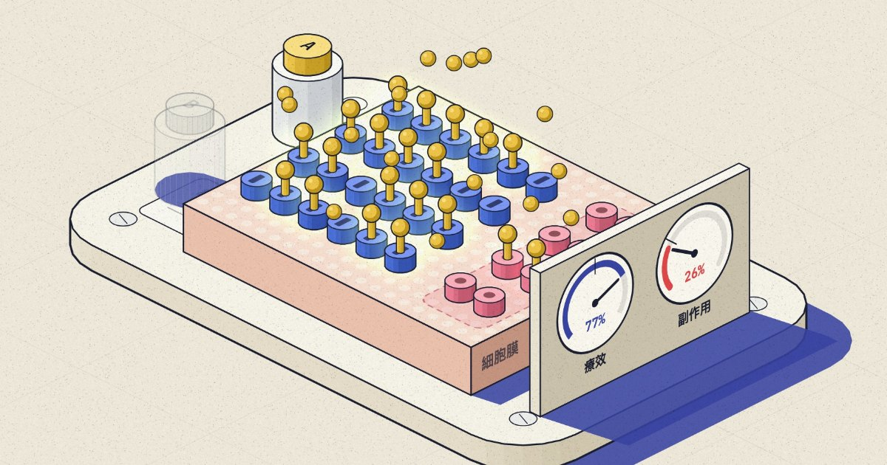

學習路線/階段 3
階段 3 / 6，第 5–6 週
藥怎麼作用
你的目標：弄懂藥怎麼在身體裡找到目標、產生效果，以及為什麼多吃不一定更有效。
階段 2 講的是身體怎麼處理藥；這一階段反過來，講藥怎麼改變身體。藥學裡叫「藥效學」。大部分的藥要先結合到一個目標上（受體、酵素或通道），效果的大小就看結合了多少、結合後能不能啟動它。
本階段的 Lab

Lab 01 新
鑰匙與鎖：藥吃越多，效果就越強嗎
藥要插進細胞上的受體才有效果。把劑量一路加倍、加入拮抗劑，看療效和副作用兩個指針怎麼走。

Lab 02 新
效力和效能：小劑量就有效的藥，就是比較強的藥嗎
兩種止痛藥吃一樣的劑量：5 mg、50 mg、500 mg。一種小劑量就有效，一種最大效果比較強，哪一種才算「比較強」？

Lab 03 新
治療指數：同一個劑量，為什麼有人沒效、有人中毒
24 位病人吃同一個劑量，濃度卻各不相同。安全範圍窄的藥就有人沒效、有人中毒，這就是有些藥要抽血監測的原因。

Lab 04 新
耐受性：為什麼越吃越沒感覺
每天吃一樣的劑量，受體被細胞收進去，效果越來越弱；突然停藥反而比吃藥前更差，慢慢減量就不會。
要學什麼
- 受體、作用劑與拮抗劑藥怎麼結合目標，作用劑啟動它，拮抗劑擋住它。（Lab 01）
- 劑量反應曲線劑量越高效果越大，但會趨近一個最大值；ED50 和最大效果代表什麼。（Lab 02）
- 效力與效能「小劑量就有效」和「最大效果比較強」是兩回事。（Lab 02）
- 治療指數與耐受性有效和中毒之間的距離（Lab 03），以及身體適應藥物後會發生什麼事（Lab 04）。
看到不熟的詞，可以查本頁的名詞表。
常見錯誤
覺得藥沒效，就自己把劑量加倍。受體有限，療效到了某個程度就很難再往上，副作用和中毒風險卻會繼續增加。藥沒效時，先問醫師或藥師原因，不要自己加量。
練習
找一份家裡藥品的仿單，翻到「藥理作用」或「作用機轉」那一段，找出三件事：它作用在什麼目標上（受體、酵素或通道）、它是作用劑還是拮抗劑（或抑制劑）、常見的副作用和這個機轉有沒有關係。看不懂的名詞先記下來，再問藥師。
| 藥品 | 示範藥 A 錠（虛構） |
| 作用目標 | 示範受體 R1 |
| 作用方式 | R1 的作用劑：結合後啟動受體 |
| 常見副作用 | 高劑量時也會結合 R2 受體，造成頭暈 |
| 我的推論 | 劑量越高，結合 R2 越多，所以副作用和劑量有關；不要自行加量。 |
名詞表
受體
細胞上的蛋白質，像一把鎖。藥或身體裡的訊號分子結合上去後，會改變細胞的反應。
作用劑（致效劑）
結合受體並啟動它的藥，效果類似身體原本的訊號分子。
拮抗劑
結合受體卻不啟動它，反而擋住作用劑或身體的訊號。
部分作用劑
能啟動受體，但就算全部占滿，效果也達不到完全作用劑的程度。
親和力
藥和受體結合得多緊。親和力高，低濃度就能占住很多受體。
劑量反應曲線
劑量和效果的關係圖，通常用對數劑量畫，呈 S 形，最後趨近最大效果。
ED50
達到一半最大效果所需要的劑量，用來比較效力。
效力
多少劑量就能產生效果。效力高 = 小劑量就有效。
效能
能達到的最大效果有多大，和需要多少劑量無關。
治療指數
中毒劑量和有效劑量的比值。越小代表越要小心。
耐受性
重複使用後，同樣劑量的效果變弱，需要更高劑量才有同樣效果。
受體下調（減量調節）
長期被作用劑刺激，細胞把表面的受體收進去或減少製造，讓訊號回到平常。
反彈（戒斷症狀）
身體適應藥物後突然停藥，原本的訊號作用在變少的受體上，症狀比用藥前更明顯。所以有些藥要依醫師指示慢慢減量。
完成這個階段後，你應該能夠
0 / 6
你的進度保存在這個瀏覽器裡。